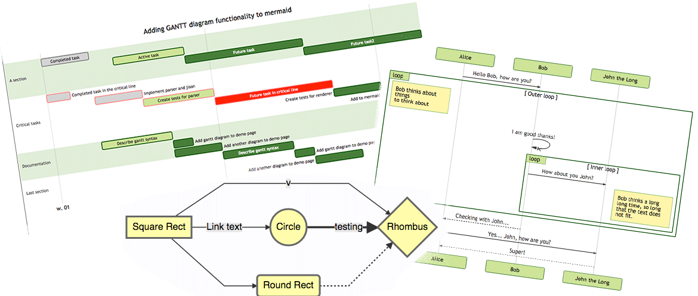

mermaid

Generation of diagrams and flowcharts from text in a similar manner as markdown.
Ever wanted to simplify documentation and avoid heavy tools like Visio when explaining your code?
This is why mermaid was born, a simple markdown-like script language for generating charts from text via javascript. Try it using our editor.
Code examples below:
An example of a flowchart
graph TD;
A-->B;
A-->C;
B-->D;
C-->D;An example of a sequence diagram
sequenceDiagram
participant Alice
participant Bob
Alice->John: Hello John, how are you?
loop Healthcheck
John->John: Fight against hypochondria
end
Note right of John: Rational thoughts <br/>prevail...
John-->Alice: Great!
John->Bob: How about you?
Bob-->John: Jolly good!Example code for a gantt diagram
gantt
dateFormat YYYY-MM-DD
title Adding GANTT diagram functionality to mermaid
section A section
Completed task :done, des1, 2014-01-06,2014-01-08
Active task :active, des2, 2014-01-09, 3d
Future task : des3, after des2, 5d
Future task2 : des4, after des3, 5d
section Critical tasks
Completed task in the critical line :crit, done, 2014-01-06,24h
Implement parser and jison :crit, done, after des1, 2d
Create tests for parser :crit, active, 3d
Future task in critical line :crit, 5d
Create tests for renderer :2d
Add to mermaid :1dPlay with mermaid using this editor or this live editor.
Credits
Many thanks to the d3 and dagre-d3 projects for providing
the graphical layout and drawing libraries! Thanks also to the
js-sequence-diagram project for usage of the grammar for the
sequence diagrams.
Mermaid was created by Knut Sveidqvist for easier documentation.
Knut has not done all work by himself, here is the full list of the projects contributors.
Downstream projects
Mermaid is supported in a number of publishing systems and editors. Please report if a plugin/editor is missing from the list below:
- Support in LightPaper 1.2+. Howto. Discout with code MERMAID_25
- gitbook-plugin
- light table
- Confluence plugin
- Using mermaid via docpad
- Using mermaid in Jekyll
- Using mermaid via Octopress
- Mardown editor Haroopad
- Plugin for atom
- Markdown Plus
- Vim Plugin
Online live editor
An editor is available for creating diagrams. With it you can quickly start writing mermaid diagrams. It is possible to:
- save the result as a svg
- get a link to a viewer of the diagram
get a link to edit of the diagram to share a diagram so that someone else can tweak it and send a new link back
Usage
Installation
Either use the npm or bower package managers as per below:
bower install mermaid --save-devnpm install mermaid --save-devOr download javascript files as per the url below, note that #version# should be replaced with version of choice:
https://cdn.rawgit.com/knsv/mermaid/#version#/dist/mermaid.min.jsEx:
There are some bundles to choose from:
- mermaid.js, mermaid.min.js This bundle contains everything you need to run mermaid
- mermaid.slim.js, mermaid.slim.min.js This bundle does not contain d3 which is useful for sites that already have d3 in place
- mermaidAPI.js, mermaidAPI.min.js, This bundle does not contain the web integration provided in the other packages but has a render function instead returns svg code.
Important:
It's best to use a specific tag or commit hash in the URL (not a branch). Files are cached permanently after the first request.
Read more about that at https://rawgit.com/
Simple usage on a web page
The easiest way to integrate mermaid on a web page requires two elements:
- Inclusion of the mermaid framework in the html page using a script tag
- A graph definition on the web page
If these things are in place mermaid listens to the page load event and when fires, when the page has loaded, it will
locate the graphs n the page and transform them to svg files.
Include mermaid on your web page:
<script src="mermaid.min.js"></script>
<script>mermaid.initialize({startOnLoad:true});</script>Further down on your page mermaid will look for tags with class="mermaid". From these tags mermaid will try to
read the chart definiton which will be replaced with the svg chart.
Define a chart like this:
<div class="mermaid">
CHART DEFINITION GOES HERE
</div>Would end up like this:
<div class="mermaid" id="mermaidChart0">
<svg>
Chart ends up here
</svg>
</div>An id is also added to mermaid tags without id.
###Labels out of bounds
If you use dynamically loaded fonts that are loaded through CSS, such as Google fonts, mermaid should wait for the
whole page to have been loaded (dom + assets, particularly the fonts file).
$(document).load(function() {
mermaid.initialize();
});
over
$(document).ready(function() {
mermaid.initialize();
});
Not doing so will most likely result in mermaid rendering graphs that have labels out of bounds. The default integration
in mermaid uses the window.load event to start rendering.
Calling mermaid.init
By default, mermaid.init will be called when the document is ready, finding all elements withclass="mermaid". If you are adding content after mermaid is loaded, or otherwise need
finer-grained control of this behavior, you can call init yourself with:
- a configuration object
- some nodes, as
- a node
- an a array-like of nodes
- or W3C selector that will find your nodes
Example:
mermaid.init({noteMargin: 10}, ".someOtherClass");Or with no config object, and a jQuery selection:
mermaid.init(undefined, $("#someId .yetAnotherClass"));Usage with browserify
The reader is assumed to know about CommonJS style of module handling and how to use browserify. If not a good place
to start would be http://browserify.org/ website.
Minimalistic javascript:
mermaid = require('mermaid');
console.log('Test page! mermaid version'+mermaid.version());Bundle the javascript with browserify.
Us the created bundle on a web page as per example below:
<!DOCTYPE html>
<html>
<head>
<meta charset="UTF-8">
<link rel="stylesheet" href="mermaid.css" />
<script src="bundle.js"></script>
</head>
<body>
<div class="mermaid">
graph LR
A-->B
B-->C
C-->A
D-->C
</div>
</body>
</html>API usage
The main idea with the API is to be able to call a render function with graph defintion as a string. The render function
will render the graph and call a callback with the resulting svg code. With this approach it is up to the site creator to
fetch the graph definition from the site, perhaps from a textarea, render it and place the graph somewhere in the site.
To do this, include mermaidAPI on your web website instead of mermaid.js. The example below show an outline of how this
could be used. The example just logs the resulting svg to the javascript console.
<script src="mermaidAPI.js"></script>
<script>
mermaidAPI.initialize({
startOnLoad:false
});
$(function(){
// Example of using the API
var element = document.querySelector("#graphDiv");
var insertSvg = function(svgCode, bindFunctions){
element.innerHTML = svgCode;
};
var graphDefinition = 'graph TB\na-->b';
var graph = mermaidAPI.render('graphDiv', graphDefinition, insertSvg);
});
</script>Sample of API usage together with browserify
$ = require('jquery');
mermaidAPI = require('mermaid').mermaidAPI;
mermaidAPI.initialize({
startOnLoad:false
});
$(function(){
var graphDefinition = 'graph TB\na-->b';
var cb = function(html){
console.log(html);
}
mermaidAPI.render('id1',graphDefinition,cb);
});Binding events
Sometimes the generated graph also has defined interactions like tooltip and click events. When using the API one must
add those events after the graph has been inserted into the DOM.
The example code below is an extract of wheat mermaid does when using the API. The example show how it is possible to
bind events to a svg when using the API for rendering.
var insertSvg = function(svgCode, bindFunctions){
element.innerHTML = svgCode;
if(typeof callback !== 'undefined'){
callback(id);
}
bindFunctions(element);
};
var id = 'theGraph';
mermaidAPI.render(id,txt,insertSvg, element);- The graph is generated using the render call.
- After generation the render function calls the provided callback function, in this case its called insertSvg.
- The callback function is called with two parameters, the svg code of the generated graph and a function. This
function binds events to the svg after it is inserted into the DOM. - Insert the svg code into the DOM for presentation
- Call the binding function that bainds the events
Example of a marked renderer
This is the renderer used for transforming the documentation from markdown to html with mermaid diagrams in the html.
var renderer = new marked.Renderer();
renderer.code = function (code, language) {
if(code.match(/^sequenceDiagram/)||code.match(/^graph/)){
return '<div class="mermaid">'+code+'</div>';
}
else{
return '<pre><code>'+code+'</code></pre>';
}
};Another example in coffeescript that also includes the mermaid script tag into the generated markup.
marked = require 'marked'
module.exports = (options) ->
hasMermaid = false
renderer = new marked.Renderer()
renderer.defaultCode = renderer.code
renderer.code = (code, language) ->
if language is 'mermaid'
html = ''
if not hasMermaid
hasMermaid = true
html += '<script src="'+options.mermaidPath+'"></script>'
html + '<div class="mermaid">'+code+'</div>'
else
@defaultCode(code, language)
rendererAdvanced usage
Error handling
When the parser encounters invalid syntax the mermaid.parseError function is called. It is possible to override this
function in order to handle the error in an application specific way.
Parsing text without rendering
It is also possible to validate the syntax before rendering in order to streamline the user experience. The function
mermaid.parse(txt) takes a text string as an argument and returns true if the text is syntactically correct and
false if it is not. The parseError function will be called when the parse function returns false.
The code-example below in meta code illustrates how this could work:
mermaid.parseError = function(err,hash){
displayErrorInGui(err);
};
var textFieldUpdated = function(){
var textStr = getTextFromFormField('code');
if(mermaid.parse(textStr)){
reRender(textStr)
}
};
bindEventHandler('change', 'code', textFieldUpdated);Configuration
Mermaid takes a number of options which lets you tweak the rendering of the diagrams. Currently there are three ways of
setting the options in mermaid.
- Instantiation of the configuration using the initialize call
- Using the global mermaid object - deprecated
- using the global mermaid_config object - deprecated
- Instantiation of the configuration using the mermaid.init call
The list above has two ways to many of doing this. Three are deprecated and will eventually be removed. The list of
configuration objects are described in the mermaidAPI documentation.
Using the mermaidAPI.initialize/mermaid.initialize call
The future proof way of setting the configuration is by using the initialization call to mermaid or mermaidAPi depending
on what kind of integration you use.
<script src="../dist/mermaid.js"></script>
<script>
var config = {
startOnLoad:true,
flowchart:{
useMaxWidth:false,
htmlLabels:true
}
};
mermaid.initialize(config);
</script>Using the mermaid object
Is it possible to set some configuration via the mermaid object. The two parameters that are supported using this
approach are:
- mermaid.startOnLoad
- mermaid.htmlLabels
mermaid.startOnLoad = true;Using the mermaid_config
Is it possible to set some configuration via the mermaid object. The two parameters that are supported using this
approach are:
- mermaid_config.startOnLoad
- mermaid_config.htmlLabels
mermaid_config.startOnLoad = true;Using the mermaid.init call
Is it possible to set some configuration via the mermaid object. The two parameters that are supported using this
approach are:
- mermaid_config.startOnLoad
- mermaid_config.htmlLabels
mermaid_config.startOnLoad = true;Flowcharts - Basic Syntax
Graph
This statement declares a new graph and the direction of the graph layout.
%% Example code
graph TDThis declares a graph oriented from top to bottom.
%% Example code
graph LRThis declares a graph oriented from left to right.
Possible directions are:
- TB - top bottom
- BT - bottom top
- RL - right left
LR - left right
TD - same as TB
Nodes & shapes
A node (default)
graph LR
id1Note that the id is what is displayed in the box.
A node with text
It is also possible to set text in the box that differs from the id. If this is done several times, it is the last text
found for the node that will be used. Also if you define edges for the node later on, you can omit text definitions. The
one previously defined will be used when rendering the box.
graph LR
id1[This is the text in the box]A node with round edges
graph LR
id1(This is the text in the box);A node in the form of a circle
graph LR
id1((This is the text in the circle));A node in an asymetric shape
graph LR
id1>This is the text in the box]Currently only the shape above is possible and not its mirror. This might change with future releases.
A node (rhombus)
graph LR
id1{This is the text in the box}Links between nodes
Nodes can be connected with links/edges. It is possible to have different types of links or attach a text string to a link.
A link with arrow head
graph LR
A-->Bgraph LR;
A-->BAn open link
graph LR
A --- BText on links
A-- This is the text --- Bor
A---|This is the text|B;A link with arrow head and text
A-->|text|Bor
A-- text -->BDotted link
-.->
Dotted link with text
-. text .->
Thick link
==>
Thick link with text
== text ==>
Special characters that break syntax
It is possible to put text within quotes in order to render more troublesome characters. As in the example below:
graph LR
d1["This is the (text) in the box"]Entity codes to escape characters
It is possible to escape characters using the syntax examplified here.
The flowchart defined by the following code:
graph LR
A["A double quote:#quot;"] -->B["A dec char:#9829;"]This would render to the diagram below:
Subgraphs
subgraph title
graph definition
endAn example below:
%% Subgraph example
graph TB
subgraph one
a1-->a2
end
subgraph two
b1-->b2
end
subgraph three
c1-->c2
end
c1-->a2Interaction
It is possible to bind a click event to a node, the click can lead to either a javascript callback or to a link which will be opened in a new browser tab.
click nodeId callback- nodeId is the id of the node
- callback is the name of a javascript function defined on the page displaying the graph, the function will be called with the nodeId as parameter.
Examples of tooltip usage below:
<script>
var callback = function(){
alert('A callback was triggered');
}
<script>graph LR;
A-->B;
click A callback "Tooltip for a callback"
click B "http://www.github.com" "This is a tooltip for a link"The tooltip text is surrounded in double quotes. The styles of the tooltip are set by the class .mermaidTooltip.
When integration mermaid using the mermaidAPI #mermaidapi the function that binds the events need to be run when the finished graph has been added to the page. This is described in the API usage section.
Styling and classes
Styling links
It is possible to style links. For instance you might want to style a link that is going backwards in the flow. As links
have no ids in the same way as nodes, some other way of deciding what style the links should be attached to is required.
Instead of ids, the order number of when the link was defined in the graph is used. In the example below the style
defined in the linkStyle statement will belong to the fourth link in the graph:
linkStyle 3 stroke:#ff3,stroke-width:4px;Styling a node
It is possible to apply specific styles such as a thicker border or a different background color to a node.
%% Example code
graph LR
id1(Start)-->id2(Stop)
style id1 fill:#f9f,stroke:#333,stroke-width:4px;
style id2 fill:#ccf,stroke:#f66,stroke-width:2px,stroke-dasharray: 5, 5;Classes
More convenient then defining the style every time is to define a class of styles and attach this class to the nodes that
should have a different look.
a class definition looks like the example below:
classDef className fill:#f9f,stroke:#333,stroke-width:4px;Attachment of a class to a node is done as per below:
class nodeId1 className;It is also possible to attach a class to a list of nodes in one statement:
class nodeId1,nodeId2 className;Css classes
It is also possible to pre dine classes in css styles that can be applied from the graph definition as in the example
below:
Example style
Example definition
graph LR;
A-->B[AAABBB];
B-->D;
class A cssClass;Default class
If a class is named default it will be assigned to all classes without specific class definitions.
classDef default fill:#f9f,stroke:#333,stroke-width:4px;Basic support for fontawesome
It is possible to add icons from fontawesome. In order to do so, you need to add the fontwesome as described in the instructions at
the fontawesome web site.
The icons are acessed via the syntax fa:#icon class name#.
The example code below
graph TD
B["fa:fa-twitter for peace"]
B-->C[fa:fa-ban forbidden]
B-->D(fa:fa-spinner);
B-->E(A fa:fa-camera-retro perhaps?);Would render the graph below:
Graph declarations with spaces between vertices and link and without semicolon
In graph declarations, the statements also can now end without a semicolon. After release 0.2.16, ending a graph statement with semicolon is just optional. So the below graph declaration is also valid along with the old declarations of the graph.
A single space is allowed between vertices and the link. However there should not be any space between a vertex and its text and a link and its text. The old syntax of graph declaration will also work and hence this new feature is optional and is introduce to improve readability.
Below is the new declaration of the graph edges which is also valid along with the old declaration of the graph edges.
A[Hard edge] -->|Link text| B(Round edge)
B --> C{Decision}
C -->|One| D[Result one]
C -->|Two| E[Result two]Sequence diagrams
A Sequence diagram is an interaction diagram that shows how processes operate with one another and in what order.
Mermaid can render sequence diagrams. The code snippet below:
%% Example of sequence diagram
sequenceDiagram
Alice->>John: Hello John, how are you?
John-->>Alice: Great!Renders the following diagram:
Syntax
Participants
The participants can be defined implicitly as in the first example on this page. The participants or actors are
rendered in order of appearance in the diagram source text. Sometimes you might want to show the participants in a
different order than how they appear in the first message. It is possible to specify the actor's order of
appearance by doing the following:
%% Example of sequence diagram
sequenceDiagram
participant John
participant Alice
Alice->>John: Hello John, how are you?
John-->>Alice: Great!Renders to the diagram below:
Messages
Messages can be of two displayed either solid or with a dotted line.
[Actor][Arrow][Actor]:Message textThere are six types of arrows currently supported:
-> which will render a solid line without arrow
--> which will render a dotted line without arrow
->> which will render a solid line with arrowhead
-->> which will render a dotted line with arrowhead
-x which will render a solid line with a cross at the end (async)
--x which will render a dotted line with a cross at the end (async)
Activations
It is possible to activate and deactivate an actor. (de)activation can be dedicated declarations:
sequenceDiagram
Alice->>John: Hello John, how are you?
activate John
John-->>Alice: Great!
deactivate JohnRenders to the diagram below:
There is also a shortcut notation by appending +/- suffix to the message arrow:
sequenceDiagram
Alice->>+John: Hello John, how are you?
John-->>-Alice: Great!Activations can be stacked for same actor:
sequenceDiagram
Alice->>+John: Hello John, how are you?
Alice->>+John: John, can yoy hear me?
John-->>-Alice: Hi Alice, I can hear you!
John-->>-Alice: I feel great!Stacked activations look like this:
Notes
It is possible to add notes to a sequence diagram. This is done by the notation
Note [ right of | left of | over ] [Actor]: Text in note content
See the example below:
%% Example of sequence diagram
sequenceDiagram
participant John
Note right of John: Text in noteRenders to the diagram below:
It is also possible to create notes spanning two participants:
sequenceDiagram
Alice->John: Hello John, how are you?
Note over Alice,John: A typical interactionLoops
It is possible to express loops in a sequence diagram. This is done by the notation
loop Loop text
... statements ...
endSee the example below
%% Example of sequence diagram
sequenceDiagram
Alice->John: Hello John, how are you?
loop Reply every minute
John-->Alice: Great!
endAlt
It is possible to express alternative paths in a sequence diagram. This is done by the notation
alt Describing text
... statements ...
else
... statements ...
endor if there is sequence that is optionat (if without else).
opt Describing text
... statements ...
endSee the example below
%% Example of sequence diagram
sequenceDiagram
Alice->>Bob: Hello Bob, how are you?
alt is sick
Bob->>Alice: Not so good :(
else is well
Bob->>Alice: Feeling fresh like a daisy
end
opt Extra response
Bob->>Alice: Thanks for asking
endStyling
Styling of the a sequence diagram is done by defining a number of css classes. During rendering these classes are extracted from the
Classes used
| Class | Description |
|---|---|
| actor | Style for the actor box at the top of the diagram. |
| text.actor | Styles for text in the actor box at the top of the diagram. |
| actor-line | The vertical line for an actor. |
| messageLine0 | Styles for the solid message line. |
| messageLine1 | Styles for the dotted message line. |
| messageText | Defines styles for the text on the message arrows. |
| labelBox | Defines styles label to left in a loop. |
| labelText | Styles for the text in label for loops. |
| loopText | Styles for the text in the loop box. |
| loopLine | Defines styles for the lines in the loop box. |
| note | Styles for the note box. |
| noteText | Styles for the text on in the note boxes. |
Sample stylesheet
body {
background: white;
}
.actor {
stroke: #CCCCFF;
fill: #ECECFF;
}
text.actor {
fill:black;
stroke:none;
font-family: Helvetica;
}
.actor-line {
stroke:grey;
}
.messageLine0 {
stroke-width:1.5;
stroke-dasharray: "2 2";
marker-end:"url(#arrowhead)";
stroke:black;
}
.messageLine1 {
stroke-width:1.5;
stroke-dasharray: "2 2";
stroke:black;
}
#arrowhead {
fill:black;
}
.messageText {
fill:black;
stroke:none;
font-family: 'trebuchet ms', verdana, arial;
font-size:14px;
}
.labelBox {
stroke: #CCCCFF;
fill: #ECECFF;
}
.labelText {
fill:black;
stroke:none;
font-family: 'trebuchet ms', verdana, arial;
}
.loopText {
fill:black;
stroke:none;
font-family: 'trebuchet ms', verdana, arial;
}
.loopLine {
stroke-width:2;
stroke-dasharray: "2 2";
marker-end:"url(#arrowhead)";
stroke: #CCCCFF;
}
.note {
stroke: #decc93;
stroke: #CCCCFF;
fill: #fff5ad;
}
.noteText {
fill:black;
stroke:none;
font-family: 'trebuchet ms', verdana, arial;
font-size:14px;
}Configuration
Is it possible to adjust the margins for rendering the sequence diagram.
This is done by defining mermaid.sequenceConfig or by the CLI to use a json file with the configuration. How to use
the CLI is described in the mermaidCLI page.
mermaid.sequenceConfig can be set to a JSON string with config parameters or the corresponding object.
mermaid.sequenceConfig = {
diagramMarginX:50,
diagramMarginY:10,
boxTextMargin:5,
noteMargin:10,
messageMargin:35,
mirrorActors:true
};Possible configration params:
| Param | Descriotion | Default value |
|---|---|---|
| mirrorActor | Turns on/off the rendering of actors below the diagram as well as above it | false |
| bottomMarginAdj | Adjusts how far down the graph ended. Wide borders styles with css could generate unwantewd clipping which is why this config param exists. | 1 |
Gant diagrams
A Gantt chart is a type of bar chart, first developed by Karol Adamiecki in 1896, and independently by Henry Gantt in the 1910s, that illustrates a project schedule. Gantt charts illustrate the start and finish dates of the terminal elements and summary elements of a project.
Mermaid can render Gantt diagrams. The code snippet below:
%% Example of sequence diagram
gantt
title A Gantt Diagram
section Section
A task :a1, 2014-01-01, 30d
Another task :after a1 , 20d
section Another
Task in sec :2014-01-12 , 12d
anther task : 24dRenders the following diagram:
Syntax
%% Example with slection of syntaxes
gantt
dateFormat YYYY-MM-DD
title Adding GANTT diagram functionality to mermaid
section A section
Completed task :done, des1, 2014-01-06,2014-01-08
Active task :active, des2, 2014-01-09, 3d
Future task : des3, after des2, 5d
Future task2 : des4, after des3, 5d
section Critical tasks
Completed task in the critical line :crit, done, 2014-01-06,24h
Implement parser and jison :crit, done, after des1, 2d
Create tests for parser :crit, active, 3d
Future task in critical line :crit, 5d
Create tests for renderer :2d
Add to mermaid :1d
section Documentation
Describe gantt syntax :active, a1, after des1, 3d
Add gantt diagram to demo page :after a1 , 20h
Add another diagram to demo page :doc1, after a1 , 48h
section Last section
Describe gantt syntax :after doc1, 3d
Add gantt diagram to demo page : 20h
Add another diagram to demo page : 48hRenders like below:
title
Tbd
Sections statements
Tbd
Setting dates
Tbd
Date format
Tbd
Diagram definition
Input Example Description:
YYYY 2014 4 digit year
YY 14 2 digit year
Q 1..4 Quarter of year. Sets month to first month in quarter.
M MM 1..12 Month number
MMM MMMM January..Dec Month name in locale set by moment.locale()
D DD 1..31 Day of month
Do 1st..31st Day of month with ordinal
DDD DDDD 1..365 Day of year
X 1410715640.579 Unix timestamp
x 1410715640579 Unix ms timestamp
Input Example Description
H HH 0..23 24 hour time
h hh 1..12 12 hour time used with a A.
a A am pm Post or ante meridiem
m mm 0..59 Minutes
s ss 0..59 Seconds
S 0..9 Tenths of a second
SS 0..99 Hundreds of a second
SSS 0..999 Thousandths of a second
Z ZZ +12:00 Offset from UTC as +-HH:mm, +-HHmm, or ZMore info in: http://momentjs.com/docs/#/parsing/string-format/
Scale
%a - abbreviated weekday name.
%A - full weekday name.
%b - abbreviated month name.
%B - full month name.
%c - date and time, as "%a %b %e %H:%M:%S %Y".
%d - zero-padded day of the month as a decimal number [01,31].
%e - space-padded day of the month as a decimal number [ 1,31]; equivalent to %_d.
%H - hour (24-hour clock) as a decimal number [00,23].
%I - hour (12-hour clock) as a decimal number [01,12].
%j - day of the year as a decimal number [001,366].
%m - month as a decimal number [01,12].
%M - minute as a decimal number [00,59].
%L - milliseconds as a decimal number [000, 999].
%p - either AM or PM.
%S - second as a decimal number [00,61].
%U - week number of the year (Sunday as the first day of the week) as a decimal number [00,53].
%w - weekday as a decimal number [0(Sunday),6].
%W - week number of the year (Monday as the first day of the week) as a decimal number [00,53].
%x - date, as "%m/%d/%Y".
%X - time, as "%H:%M:%S".
%y - year without century as a decimal number [00,99].
%Y - year with century as a decimal number.
%Z - time zone offset, such as "-0700".
%% - a literal "%" character.More info in: https://github.com/mbostock/d3/wiki/Time-Formatting
Styling
Styling of the a sequence diagram is done by defining a number of css classes. During rendering these classes are extracted from the
Classes used
| Class | Description |
|---|---|
| actor | Style for the actor box at the top of the diagram. |
| text.actor | Styles for text in the actor box at the top of the diagram. |
| actor-line | The vertical line for an actor. |
| messageLine0 | Styles for the solid message line. |
| messageLine1 | Styles for the dotted message line. |
| messageText | Defines styles for the text on the message arrows. |
| labelBox | Defines styles label to left in a loop. |
| labelText | Styles for the text in label for loops. |
| loopText | Styles for the text in the loop box. |
| loopLine | Defines styles for the lines in the loop box. |
| note | Styles for the note box. |
| noteText | Styles for the text on in the note boxes. |
Sample stylesheet
.grid .tick {
stroke: lightgrey;
opacity: 0.3;
shape-rendering: crispEdges;
}
.grid path {
stroke-width: 0;
}
#tag {
color: white;
background: #FA283D;
width: 150px;
position: absolute;
display: none;
padding:3px 6px;
margin-left: -80px;
font-size: 11px;
}
#tag:before {
border: solid transparent;
content: ' ';
height: 0;
left: 50%;
margin-left: -5px;
position: absolute;
width: 0;
border-width: 10px;
border-bottom-color: #FA283D;
top: -20px;
}
.taskText {
fill:white;
text-anchor:middle;
}
.taskTextOutsideRight {
fill:black;
text-anchor:start;
}
.taskTextOutsideLeft {
fill:black;
text-anchor:end;
}Configuration
Is it possible to adjust the margins for rendering the sequence diagram.
This is done by defining the sequenceConfig part of the configuration object. Read more about it here. How to use
the CLI is described in the mermaidCLI page.
mermaid CLI
Installing mermaid globally (npm install -g mermaid) will expose the mermaid command to your environment, allowing you to generate PNGs from any file containing mermaid markup via the command line.
Note: The mermaid command requires PhantomJS (version ^1.9.0) to be installed and available in your $PATH, or you can specify it's location with the -e option. For most environments, npm install -g phantomjs will satisfy this requirement.
Usage
$ mermaid --help
Usage: mermaid [options] ...
file The mermaid description file to be rendered
Options:
-s --svg Output SVG instead of PNG (experimental)
-p --png If SVG was selected, and you also want PNG, set this flag
-o --outputDir Directory to save files, will be created automatically, defaults to `cwd`
-e --phantomPath Specify the path to the phantomjs executable
-c --sequenceConfig Specify the path to the file with the configuration to be applied in the sequence diagram
-h --help Show this message
-v --verbose Show logging
-w --width width of the generated png (number)
--version Print version and quit mermaid testGraph.mmd
mermaid testGraph.mmd -w 980Sequence diagram configuration
The --sequenceConfig option allows overriding the sequence diagram configuration. It could be useful to increase the width between actors, the notes width or the margin to fit some large texts that are not well rendered with the default configuration, for example.
The content of the file must be a JSON like this:
{
"diagramMarginX": 100,
"diagramMarginY": 10,
"actorMargin": 150,
"width": 150,
"height": 65,
"boxMargin": 10,
"boxTextMargin": 5,
"noteMargin": 10,
"messageMargin": 35
}These properties will override the default values and if a property is not set in this object, it will left it empty and could raise an error. The current properties (measured in px) are:
- diagramMarginX: Size of the empty space to add at the left-right of the diagram.
- diagramMarginY: Size of the empty space to add at the top-bottom of the diagram.
- actorMargin: Horizontal space between each participant. The arrows between them would have this size too.
- width: Width of the participant box.
- height: Height of the participant box.
- boxMargin: Blank area around loop boxes.
- boxTextMargin: Blank area between the text and the border in a loop box.
- noteMargin: Size of the empty space around a note.
- messageMargin: Space between messages
CLI Known Issues
- SVG output currently does some replacement on text, as mermaid's SVG output is only appropriate for browsers. Text color and background color is not yet replicated; please use PNGs for most purposes until this is resolved.
- SVG output is decidedly non-standard. It works, but may cause issues in some viewers.
Demos
Basic flowchart
%% Example diagram
graph LR
A[Square Rect] -- Link text --> B((Circle))
A --> C(Round Rect)
B --> D{Rhombus}
C --> DLarger flowchart with some styling
%% Code for flowchart below
graph TB
sq[Square shape] --> ci((Circle shape))
subgraph A subgraph
od>Odd shape]-- Two line<br>edge comment --> ro
di{Diamond with <br/> line break} -.-> ro(Rounded<br>square<br>shape)
di==>ro2(Rounded square shape)
end
%% Notice that no text in shape are added here instead that is appended further down
e --> od3>Really long text with linebreak<br>in an Odd shape]
%% Comments after double percent signs
e((Inner / circle<br>and some odd <br>special characters)) --> f(,.?!+-*ز)
cyr[Cyrillic]-->cyr2((Circle shape Начало));
classDef green fill:#9f6,stroke:#333,stroke-width:2px;
classDef orange fill:#f96,stroke:#333,stroke-width:4px;
class sq,e green
class di orangeBasic sequence diagram
%% Sequence diagram code
sequenceDiagram
Alice ->> Bob: Hello Bob, how are you?
Bob-->>John: How about you John?
Bob--x Alice: I am good thanks!
Bob-x John: I am good thanks!
Note right of John: Bob thinks a long<br/>long time, so long<br/>that the text does<br/>not fit on a row.
Bob-->Alice: Checking with John...
Alice->John: Yes... John, how are you?Loops, alt and opt
%% Sequence diagram code
sequenceDiagram
loop Daily query
Alice->>Bob: Hello Bob, how are you?
alt is sick
Bob->>Alice: Not so good :(
else is well
Bob->>Alice: Feeling fresh like a daisy
end
opt Extra response
Bob->>Alice: Thanks for asking
end
endMessage to self in loop
%% Sequence diagram code
sequenceDiagram
participant Alice
participant Bob
Alice->>John: Hello John, how are you?
loop Healthcheck
John->>John: Fight against hypochondria
end
Note right of John: Rational thoughts<br/>prevail...
John-->>Alice: Great!
John->>Bob: How about you?
Bob-->>John: Jolly good!mermaidAPI
This is the api to be used when handling the integration with the web page instead of using the default integration
(mermaid.js).
The core of this api is the render function that given a graph definitionas text renders the graph/diagram and
returns a svg element for the graph. It is is then up to the user of the API to make use of the svg, either insert it
somewhere in the page or something completely different.
Configuration
These are the default options which can be overridden with the initialization call as in the example below:
mermaid.initialize({
flowchart:{
htmlLabels: false
}
});logLevel , decides the amount of logging to be used.
- debug: 1
- info: 2
- warn: 3
- error: 4
- fatal: 5
cloneCssStyles - This options controls whether or not the css rules should be copied into the generated svg
startOnLoad - This options controls whether or mermaid starts when the page loads
arrowMarkerAbsolute - This options controls whether or arrow markers in html code will be absolute pats or
an anchor, #. This matters if you are using base tag settings.flowchart
The object containing configurations specific for flowcharts
htmlLabels - Flag for setting whether or not a html tag should be used for rendering labels
on the edges
useMaxWidth - Flag for setting whether or not a all available width should be used for
the diagram.sequenceDiagram
The object containing configurations specific for sequence diagrams
diagramMarginX - margin to the right and left of the sequence diagram
diagramMarginY - margin to the over and under the sequence diagram
actorMargin - Margin between actors
width - Width of actor boxes
height - Height of actor boxes
boxMargin - Margin around loop boxes
boxTextMargin - margin around the text in loop/alt/opt boxes
noteMargin - margin around notes
messageMargin - Space between messages
mirrorActors - mirror actors under diagram
bottomMarginAdj - Depending on css styling this might need adjustment.
Prolongs the edge of the diagram downwards
useMaxWidth - when this flag is set the height and width is set to 100% and is then scaling with the
available space if not the absolute space required is usedgantt
The object containing configurations specific for gantt diagrams
titleTopMargin - margin top for the text over the gantt diagram
barHeight - the height of the bars in the graph
barGap - the margin between the different activities in the gantt diagram
topPadding - margin between title and gantt diagram and between axis and gantt diagram.
leftPadding - the space allocated for the section name to the left of the activities.
gridLineStartPadding - Vertical starting position of the grid lines
fontSize - font size ...
fontFamily - font family ...
numberSectionStyles - the number of alternating section styles
*axisFormatter - formatting of the axis, this might need adjustment to match your locale and preferencesparse
Function that parses a mermaid diagram definition. If parsing fails the parseError callback is called and an error is
thrown andversion
Function returning version information
##render
Function that renders an svg with a graph from a chart definition. Usage example below.
mermaidAPI.initialize({
startOnLoad:true
});
$(function(){
var graphDefinition = 'graph TB\na-->b';
var cb = function(svgGraph){
console.log(svgGraph);
};
mermaidAPI.render('id1',graphDefinition,cb);
});Development
Updating the documentation
Getting the development environment up
- Fork the gh-pages branch in the the mermaid repository
- Do npm install
Working with the documentation
The html files are generated from the source and the markdown files in the docs folder. The site generation is done
using the docker.js framework with the command below.
docker -i ../mermaid/ -x "*git*|*travis*|*bin*|*dist*|*node_modules*|*gulp*|*lib*|*editor*|*conf*|*scripts*|*test*|*htmlDocs*" --extras mermaid -w -o htmlDocsThus ... One important thing to remember. Do not edit the html files directly! Those changes will be overwritten
when the site is re-generated.
Committing the changes
Do a pull request to merge the changes to the site.
Things to be done in order to add a new diagram type
Step 1: Grammar & Parsing
Grammar
This would be to define a jison grammar for the new diagram type. That should start with a way to identify that the text in the mermaid tag is a diagram of that type. Create a new folder under diagrams for your new diagram type and a parser folder in it. This leads us to step 2.
For instance:
- the flowchart starts with the keyword graph.
- the sequence diagram starts with the keyword sequenceDiagram
Store data found during parsing
There are some jison specific sub steps here where the parser stores the data encountered when parsing the diagram, this data is later used by the renderer. You can during the parsing call a object provided to the parser by the user of the parser. This object can be called during parsing for storing data.
statement
: 'participant' actor { $$='actor'; }
| signal { $$='signal'; }
| note_statement { $$='note'; }
| 'title' message { yy.setTitle($2); }
;In the extract of the grammar above, it is defined that a call to the setTitle method in the data object will be done when parsing and the title keyword is encountered.
Note: Make sure that the parseError function for the parser is defined and calling mermaidPAI.parseError this way a common way of detecting parse errors is provided for the end-user.
For more info look in the example diagram type:
The yy object has the following function:
exports.parseError = function(err,hash){
mermaidAPI.parseError(err,hash);
};when parsing the yy object is initialized as per below:
var parser;
parser = exampleParser.parser;
parser.yy = db;Step 2: Rendering
Write a renderer that given the data found during parsing renders the diagram. To look at an example look at sequendeRenderer.js rather then the flowchart renderer as this is a more generic example.
Place the renderer in the diagram folder.
Step 3: Detection of the new diagram type
The second thing to do is to add the capability to detect the new new diagram to type to the detectType in utils.js. The detection should return a key for the new diagram type.
Step 4: The final piece - triggering the rendering
At this point when mermaid is trying to render the diagram, it will detect it as being of the new type but there will be no match when trying to render the diagram. To fix this add a new case in the switch statement in main.js:init this should match the diagram type returned from step number 2. The code in this new case statement should call the renderer for the diagram type with the data found by the parser as an argument.
Usage of the parser as a separate module
Setup
var graph = require('./graphDb');
var flow = require('./parser/flow');
flow.parser.yy = graph;Parsing
flow.parser.parse(text);Data extraction
// Javascript example
graph.getDirection();
graph.getVertices();
graph.getEdges();The parser is also exposed in the mermaid api by calling:
var parser = mermaid.getParser();Note that the parse needs a graph object to store the data as per:
flow.parser.yy = graph;Look at graphDb.js for more details on that object.
Upgrading to from version -0.4.0
Some of the interfaces has been upgraded.
Initialization
mermaid_config is no longer used. Instead a call to mermaid initialize is done as in the example below:
version 0.4.0
mermaid_config = {
startOnLoad:true
};will look like below in version 0.5.0
mermaid.initialize({
startOnLoad:true
});